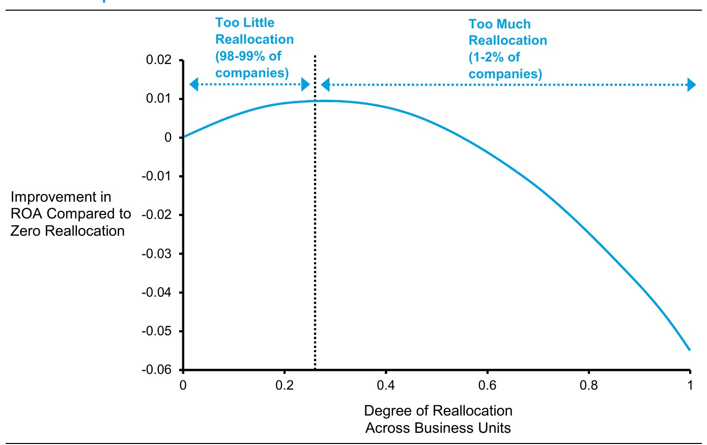
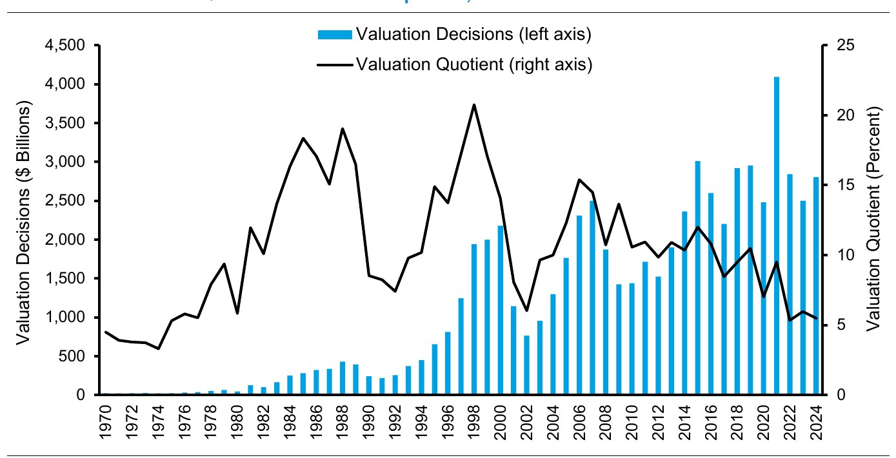
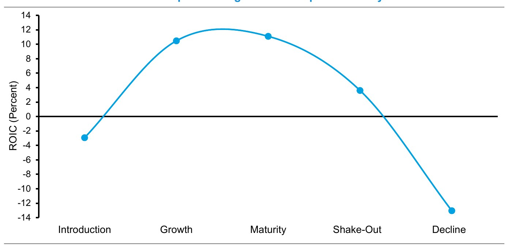

← 站主随笔 · 资本配置 · 分章阅读
资本配置：五条原则，看管理层会不会把钱花对地方 · 中英对照 · 第 1 / 9 章
资本配置是动态的，而且有证据表明公司完全可以做得比现在更好。例如，学者们测量了公司在不同业务单元之间重新配置资本的程度：0 表示各事业部当年的资本开支与上一年持平，1 表示彻底重新配置；然后他们把重新配置的程度与资产回报率（ROA，一种衡量公司表现的指标）的改善幅度做比较（见图表 1）。理论上，公司应该把资本投向最优化、最高效的用途，而不考虑过去是怎么花钱的。
Capital allocation is dynamic and there is evidence that companies can be better at it than they are. For example, scholars measured how much capital companies reallocated from one business unit to another, with zero indicating that capital spending across divisions was the same as in the prior year and one reflecting complete reallocation. They then compared the degree of reallocation to the improvement in return on assets, a measure of corporate performance (see exhibit 1).竞争格局与各业务单元前景的变化，说明一定程度的重新配置是合理的。研究者确实找到了一个最优的重新配置程度。但他们同时发现：5,760 个观测样本中，只有 38 个高于这个阈值——不到 1%。换句话说，绝大多数公司只要提高重新配置的程度，就能改善自己的财务表现.5
Changes in the competitive landscape and in the prospects of the business units suggest that some reallocation is appropriate. The researchers in fact found an optimal degree of reallocation. But they also discovered that only 38 of the 5,760 observations, or less than 1 percent, were above that threshold. In other words, the vast majority of companies could improve their financial performance by increasing their reallocation.这种行为与现状偏差（status quo bias）一致——即使存在更优的替代方案，人们仍倾向于继续做自己正在做的事。6 它也符合承诺升级（escalation of commitment）：我们宁愿在一个既有承诺上再加码，也不愿改变方向。7
This behavior is consistent with status quo bias, which suggests that people tend to continue doing what they are doing even in the presence of preferable alternatives. It is also compatible with the escalation of commitment, the idea that we would rather escalate a commitment to a prior action than change course.
有若干因素让管理团队无法把资本配置到尽可能好的程度。第一点很简单：他们没有一套清晰而正确的流程。资本配置归根结底是评估机会、并执行那些有吸引力的机会；这需要根据形势随时决定自己该当买方还是卖方，需要一定的超脱与分析敏捷性。
There are a handful of factors that keep management teams from allocating capital as well as they could. The first, simply, is that they do not have a clear and correct process for doing so. Capital allocation is ultimately about assessing opportunities and executing on the ones that are attractive. As such, it requires a willingness to be a buyer or a seller given the circumstances. This necessitates some dispassion and analytical agility.几乎每一个资本配置问题的答案都是"视情况而定"。在某个价格上回购股票，可能正是提升存量股东每股价值的好办法；而在另一个价格上卖出，则可能是合算的。8 一次战略性收购在某个价格上会为收购方增加价值，在更高的价格上则会毁损价值。而资产剥离——很多高管觉得它远不如收购诱人——同样可能对股东有利。
The answer to nearly every capital allocation question is, "it depends." Buying back stock at one price may be a great way to add value per share for ongoing holders whereas selling it at another price may be desirable. A strategic acquisition will add to an acquirer's value at a certain price but destroy value at a higher one. And divestitures, which many executives find less compelling than acquisitions, can be beneficial for shareholders.估值是把这些决策绑在一起的那根绳子。估值商（valuation quotient）用公司市值去除那些依赖估值的决策金额。这个比率衡量的是：估值对整体股东价值有多重要。9
Valuation is the tie that binds these decisions. The valuation quotient divides a company's decisions that rely on valuation by its market capitalization. This measures how important valuation is to overall shareholder value.图表 2 显示，1970 至 2024 年间，美国公司的估值商平均为 10%。我们在分子中计入的估值类决策包括：发行普通股与优先股所得的款项、并购（M&A）总额（含资产剥离）、以及回购股票支付的现金；然后用年初时美股总市值去除它。对于估值商偏高的公司，估值错误会压低其股东总回报（TSR）——如果这些错误跨越多年、涉及多笔资本配置决策，影响就更大。
Exhibit 2 shows that the valuation quotient for U.S. companies averaged 10 percent from 1970 through 2024. The valuation decisions we consider in the numerator include the proceeds from issuance of common and preferred stock, total mergers and acquisitions (M&A) including divestitures, and cash paid for share buybacks. We divide the sum of these decisions by the market capitalization of U.S. stocks at the beginning of the year. For companies with high valuation quotients, valuation errors limit total shareholder returns (TSR), especially if they span multiple years and capital allocation decisions.某种意义上，高管应当像投资组合经理那样行事：把资本配置到有望赚取超额回报的机会上，同时剥离那些在别人手里更值钱的资产。但高管的资本配置与投资者的资本配置有两处实质性的不同。10 其一，高管的决定往往难以逆转——比如拆掉一笔大型收购，代价高昂且耗时。其二，高管通常对自己投资的结果还握有一定的主导权，因为他们可以随时调整资源、战略与战术。
In a sense, executives should act like investment portfolio managers in that they allocate capital to opportunities that have the potential to earn excess returns and divest assets that are worth more to others. But capital allocation for executives is different than it is for investors in two ways that are meaningful. Decisions by executives are often hard to reverse. For example, unwinding a large acquisition can be costly and time consuming. On the other hand, executives generally have some control over the outcomes for the investments they make. This is because they can shift resources, strategies, and tactics as necessary.
激励是阻碍有效资本配置的第二个因素，它们通常反映了委托—代理问题带来的成本。资产的所有者（委托人）与负责管理资产的人（代理人）的目标可能冲突。股东是委托人，高管是代理人。比如，公司规模与高管薪酬之间存在正相关关系；结果就是，管理层可能有动机通过收购来做大公司——哪怕那些交易对股东毫无价值可言。另外，高管还可能把自己的薪酬挂钩到与价值创造没有直接关系的财务或非财务指标上。这些做法都会给股东制造"代理成本"。
Incentives are the second factor that impedes effective capital allocation. These generally reflect the costs that arise from the principal-agent problem. The goals of the owners of assets, the principals, and those in charge of managing the assets, the agents, can come into conflict. Shareholders are the principals and executives are the agents. For instance, there is a positive relationship between firm size and executive compensation. As a result, managers may have an incentive to grow through acquisitions even in cases where the deals add no value for shareholders. Further, executives may peg their compensation to financial or non-financial metrics that have no direct link to value creation. These actions create "agency costs" for shareholders.最后是沃伦·巴菲特所说的"制度性强制（institutional imperative）"。11 它说的是：高管会在实践上（包括薪酬与资本配置）"不假思索地"相互模仿；而公司内部的较低层级人士，会迅速为 CEO 想做的任何事情找出业务上的理由。12
Finally, there is what Warren Buffett calls the "institutional imperative." This says executives will "mindlessly" imitate one another in their practices, including compensation and capital allocation, and that junior people within a firm will be quick to come up with business justifications to support whatever the CEO wants to do.金融服务公司 Morningstar 依据资产负债表实力、投资眼光以及对股东分配的适当性，为美国约 1,850 家上市公司打出资本配置评级。在 2025 年 9 月已评级公司中，16% 的公司三方面都足够出色、获评"典范"，78% 为"标准"，5% 得分低到被视为"差"。13
Morningstar, a financial services firm, provides a Capital Allocation Rating for roughly 1,850 public companies in the U.S. based on balance sheet strength, investment acumen, and appropriate distributions to shareholders. Of the companies rated as of September 2025, 16 percent score high enough in each area to be deemed exemplary, 78 percent are standard, and 5 percent rate low enough to be considered poor.评估资本配置时，判断一家公司处在生命周期的哪个阶段很重要。许多学者与从业者用"年龄"来拟人化地刻画生命周期，但这是一个有限的度量：不同行业经历生命周期的速度不同，有些公司的学习速度快于竞争对手，而"年龄"本身也有多种算法。
Consideration of where a company is in its life cycle is important in assessing capital allocation. Many academics and practitioners depict the life cycle anthropomorphically by using age. This is a limited measure considering that industries move through the life cycle at different rates, some firms learn faster than do their competitors, and age itself can be calculated in multiple ways.我们发现，按年龄计算的平均 ROIC 并不会呈现与生命周期相联系的倒 "U" 形（即 ROIC 先低、达到顶点、再逐步走低）。相反，我们发现利润与投资的形态是理解生命周期好得多的方式（见图表 3）。注意，我们假定公司诞生于其首次公开募股（IPO）之日。14
We observed that the average ROIC based on age does not produce the pattern associated with a life cycle of an inverted "U," in which ROIC starts low, reaches an apex, and then drifts lower. Instead, we found that patterns of profits and investment are a much better way to understand the life cycle (see exhibit 3). Note that we assumed companies are born on the date of their initial public offering.
我们的分析建立在密西西比大学会计学教授 Victoria Dickinson 的工作之上。Dickinson 的研究起点是经济学教授 Steven Klepper 与 Michael Gort 提出的、基于实证的生命周期框架，它把企业划分为五个阶段：引入期（introduction）、成长期（growth）、成熟期（maturity）、淘汰期（shake-out）、衰退期（decline）。随后她把各阶段与现金流量表中的结果挂钩，让这套分类更严谨。这一形态的推论是：对生意的投资往往在生命周期靠前时最大，而向股东返还资本的倾向在靠后时更高。
Our analysis is based on work by Victoria Dickinson, a professor of accounting at the University of Mississippi. Dickinson starts with research by Steven Klepper and Michael Gort, professors of economics, who developed an empirically-grounded life cycle framework based on five stages: introduction, growth, maturity, shake-out, and decline. She then added rigor to the classification by linking the stages to results within the statement of cash flows. Reflecting this pattern, investment in the business tends to be greatest toward the beginning of the life cycle and the proclivity to return capital to shareholders is higher toward the end.本报告分三部分。第一部分打基础：回顾资本的来源、资本配置的备选方案，以及 1970 年以来美国公司如何配置资本；我们也考察增长与投入资本回报率，以理解为什么资本配置对高管与投资者而言始终重要。
This report has three parts. The first establishes the foundation by reviewing the sources of capital, alternatives for capital allocation, and how companies in the United States have allocated capital since 1970. We also look at growth and return on invested capital to understand why capital allocation remains an important consideration for executives and investors.第二部分逐一更细致地检视每一种资本配置备选方案。我们这项工作的新意在于纳入了无形资产投资——它无疑重要，却天生难以衡量。我们还借助学术研究获得一个统览视角，并在合适的地方提供一个思考价值创造前景的框架。
Next, we review each of the capital allocation alternatives in more detail. What is new in our work is the inclusion of intangible investments, which are undoubtedly important but inherently difficult to measure. We also draw on academic research to gain a synoptic view and, where appropriate, provide a framework for thinking about the prospects for value creation.第三部分给出一些评估公司资本配置能力的准则，包括：检视公司过去如何配置资本、度量投入资本回报率、考虑激励所起的作用，以及应当指导资本配置的五条核心原则。
Finally, we offer some guidelines for assessing a company's capital allocation skills. These include examining how the firm has allocated capital in the past, measurement of return on invested capital, consideration of the role of incentives, and five core principles that should guide capital allocation.学术研究考察过各种资本配置方式（并购、股份回购、首次派息等）所对应的股价累计异常收益（CAR）。15 CAR 的计算试图通过剔除大盘涨跌的影响，来隔离出某项公告本身的作用。把这些工作与其他资本配置形式的具体研究结合起来，我们得以对股票市场对各类活动能否创造价值的评价做出一个粗略排序。注意，这些汇总结果并未考虑每个案例的具体情形——换句话说，它说明的是平均而言的结果，个别案例的结果可能非常不同。
Academic research has investigated the cumulative abnormal return (CAR) for stock prices associated with various capital allocation alternatives, including M&A, share buybacks, and dividend initiations. The CAR calculation tries to isolate the impact of an announcement by removing changes associated with the stock market. Combining this work with specific research on other forms of capital allocation allows us to create a rough ranking of the stock market's assessment of potential value creation by activity. Note that these summary results do not consider the specific circumstances of each case.分拆、资产剥离、首次派息、股份回购、偿还债务、资本开支，以及部分无形资产投资，都与正的超额 TSR 相关联。研发（R&D）往往对价值中性，并购对买方而言也是如此。而股权融资——包括 IPO 与增发——平均而言预示的是负的超额收益。
Spin-offs, divestitures, dividend initiations, share buybacks, debt prepayments, capital expenditures, and some intangible investments are associated with positive excess TSRs. Research and development (R&D) tends to be value-neutral, as is M&A for the buyer. And equity issuance, including initial public offerings and seasoned equity offerings, predicts negative excess returns on average.资产增长是个粗糙的工具，但它能预测异常收益：资产增长高的公司，其 TSR 低于资产增长低的公司。16 资产收缩与高于资产扩张的 TSR 相关。这一实证观察已被写进多因子资产定价模型，值得关注。17 但资产增长终究是投资的一个糟糕代理变量，而且它忽略了内部生成的无形资产投资的兴起。18 至于为何会出现这样一条普遍结论，可能的解释是：由股权发行或股权注销推动的资产水平变化。19
Asset growth is a blunt tool that predicts abnormal returns. Specifically, companies with high asset growth earn lower TSRs than companies with low asset growth. Asset contraction is associated with higher TSRs than asset expansion. This empirical observation has been built into multi-factor asset pricing models and is worthy of attention. But asset growth is ultimately a poor proxy for investment and neglects the rise of investments in internally-generated intangible assets. Changes in asset levels fueled either by equity issuance or retirement might explain the broad result.下面我们开始打基础：回顾金融资本的来源与去向、1970 年以来公司如何使用这些资本，以及为什么资本配置始终是一个重要的投资考量。
We now lay the foundation by reviewing the sources and uses of financial capital, how companies have spent that capital since 1970, and why capital allocation remains an important investment consideration.